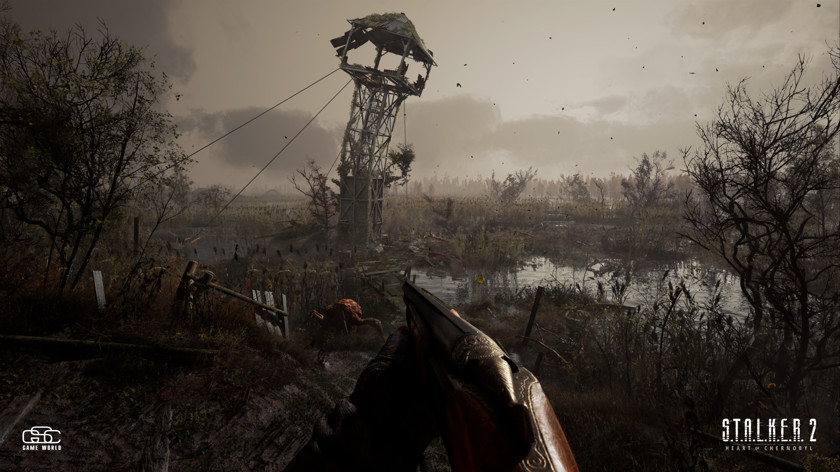
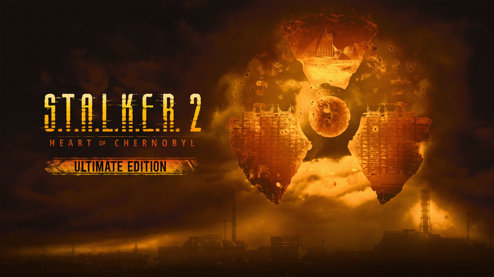

Але не лише супротивники та смертельні аномалії стануть вам на заваді. Ви відчуєте на собі всі складнощі нового сталкерського життя в пошуках рідкісних і цінних ресурсів — їжі, напоїв, ліків, алкоголю та іншого. Імерсивні механіки виживання поглиблять ігровий процес, додаючи нових вражень вашій мандрівці Зоною на шляху з розгалуженим сюжетом.
Відкрийте живу Чорнобильську зону відчуження, повну небезпечних мутантів, угруповань, що воюють між собою, смертельних аномалій та артефактів неймовірної цінності. Нагорода надзвичайно висока, але ціна за неї може виявитися більшою за саме життя. S.T.A.L.K.E.R. — франшиза з численними відзнаками від критиків, в якій мільйони гравців досліджують вороже середовище Чорнобильської аномальної зони відчуження вже понад десять років.
ULTIMATE EDITION
«S.T.A.L.K.E.R. 2: Серце Чорнобиля» — продовження культової серії шутерів від першої особи в альтернативній версії Чорнобильської зони відчуження. Відкрийте нову сторінку історії Зони та, в ролі сталкера-одинака, вирушайте на пошуки пригод у великому відкритому постапокаліптичному світі. Прокладайте свій шлях радіоактивним середовищем, знаходьте друзів, знищуйте ворогів, шукайте самого себе на шляху до легендарного Серця Чорнобиля.
Цифрове ULTIMATE-видання — надає доступ до повноцінної гри, всіх цифрових бонусів інших видань, двох сюжетних доповнень, після їх виходу, та повної Сезонної Перепустки.
Бонус за Передзамовлення Ексклюзив Steam Додаткове Завдання Цифровий Артбук Офіційний Саундтрек 1 костюм, 3 скіни 3 костюми, 7 скінів 2 Сюжетних Доповнення СЕЗОННА ПЕРЕПУСТКА